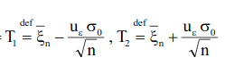

A statisztikai minta fogalma
Definíció: Valamely valószínűségi változóra vonatkozó véges számú független kísérlet vagy megfigyelés eredménye: véges sok azonos eloszlású valószínűségi változó.
Jelölés: Tekintsük a valószínűségi változót, ekkor a X-re vonatkozó n elemű minta
X1, X2,....., X n
Az n számú kísérlet elvégzése során a i mintaelem egy-egy konkrét számértéket vesz fel:
X1 = x1, X2 = x2 ,..., Xn = xn
(elméleti vs tényleges)
A statisztikai minta reprezentatív: a mintaelemek eloszlása megegyezik a vizsgált valószínűségi változó eloszlásával, hiszen mindegyik kísérletnél magát a valószínűségi változót figyeljük meg.
A statisztikai minta elemei független valószínűségi változók, mivel a kísérleteket egymástól függetlenül végezzük.
A mintaelemekből tapasztalati jellemzőket, ún. statisztikát konstruálunk.
A statisztika a mintaelemek valamely függvénye. A statisztika tehát maga is valószínűségi változó és eloszlásának meghatározása fontos feladat.
A várható érték az eloszlás súlypontjáról, a szórás a változó értékeinek szétszórtságáról ad felvilágosítást. Ezekre az elméleti jellemzőkre a mintaelemekből igyekszünk következtetni úgy, hogy az X1, X2, ...,Xn mintából különböző függvényeket képezünk. Valamely függvény minden konkrét minta esetén egyetlen számadatba tömöríti a mintaelemekben rejlő információt.
Mintaközép (átlag)

Tétel:
Ha a valószínűségi változó várható értéke μ, szórása σ, akkor a mintaközépre
Rendezett minta:
A véletlen, az észlelés sorrendjében kapott mintaelemeket
rendezzük nagyság szerint. Jelölje a nagyság szerint a
legkisebbet
,
a megmaradók közül a legkisebbet
 , stb.
, stb.
Ekkor
A rendezett mintaelemek már nem függetlenek és nem is azonos eloszlásúak.
Mintaterjedelem:
Medián:
Ha a mintanagyság páratlan, akkor a középső mintaelem a medián - páros mintanagyság esetén a két középső átlaga.
Tapasztalati (empirikus) szórásnégyzet:
A mintaközéptől vett eltérések négyzetének átlaga:
Korrigált tapasztalati szórásnégyzet:
Variációs tényező (relatív szórás):
Torzítatlan becslés:
Ha a valószínűségi változó elméleti jellemzője az a paraméter, és az statisztikai mintából kívánjuk becsülni, akkor elvárjuk, hogy az statisztika értékei az 'a' szám körül ingadozzanak.
Konzisztens becslés:
A minta elemszámának növelésével az statisztika egyre jobban közelítse meg az 'a' paramétert.
Elégséges becslés:
Az statisztika tartalmazza az 'a' paraméterre vonatkozó összes információt.
Efficiens becslés:
A legkisebb szórású torzítatlan becslés.
Konfidenciaintervallum:
Olyan intervallum, amely a paramétert lefedi bizonyos valószínűséggel. Az intervallum végpontjai függnek a véletlentől, a paraméter pedig egy ismeretlen konstans.
Az ismeretlen m várható értékre adunk meg egy intervallumot, amely végpontjai a mintaelemek függvényei lesznek és adott (1-Ɛ) valószínűséggel lefedi az ismeretlen valószínűséget.
Ez -ra szimmetrikus, hiszen az „T1” alsó és „T2” felső érték az alábbi módon számítható ki a várható értékre normális eloszlás és ismert szórás esetén:

Itt az u értékét táblázatból kereshetjük ki, konstans, a szórás és a minták száma ismert. (kszi görög betű és x ugyanazt jelölik, forrástól függenek)
Ekkor annak a valószínűsége, hogy az ismeretlen az [a, b] intervallumba esik, 1- Ɛ.
Pl: Ɛ=0.05
uƐ értékét keressük táblázatból: Φ(uƐ)=1-( Ɛ/2) = 0.975, tehát uƐ=1.96
Tehát a mintából ismert átlagot az elolszlásból ismert szórást és a mintavételek számát kell behelyettesíteni a képletbe:
T1 = átlag-1.96*szórás/√mintavételek száma T2 = átlag+1.96*szórás/√mintavételek száma
Statisztikai próbák: Legyen teta egy ismeretlen paraméter, és
H0: teta=teta0 nullhipotézis. Itt teta0 egy adott szám (előírás, szabvány, érték stb., amely kedvező számunkra, az a jó, ha ezt elérjük). Teta nem ismert. H0 egyszerű hipotézis, és 1 teta0 érték van.
H1: teta!= teta0 ellenhipotézis, vagy alternatív hipotézis, ez általában számunkra kedvezőtlen eset. Összetett hipotézis, mert több érték jön számításba:
H1: teta != teta0 kétoldali
teta < teta0 egyoldali (pl: vásárló esetén a csoki súlya <100g rossz)
teta > teta0 egyoldali (pl: eladó esetén a kínált áru súlya > 10kg rossz)
Döntéshozás:
H0 igaz H0 hamis
H0 elfogadva helyes döntés másodfajú hiba
H0 elvetve elsőfajú hiba helyes döntés
Mindkét hibát minimalizálni kellene, de nem lehetséges. Általában ha az egyik hibát csökkentem, a másik nőni fog. Ezért rögzítünk egy alfa>0 kicsi számot (pl 0.01)
Pl: H0: jó az autó, amit meg akarok venni
1.ránézek, azt hiszem, hogy jó és nem veszem meg: 1.fajú hiba
2. rossz az autó, és mégis megveszem: 2.fajú hiba
Rögzített elsőfajú hiba esetén keressük azt a próbát/tesztet, amely a 2.fajú hibát minimalizálja. Ezt a rögzített hibát szokás szabványba foglalni.
U-próba:
A legegyszerűbb próba az u-próba. Legyen X1,...,Xn minta N(0,1) eloszlásból. Tegyük fel, hogy σ2 ismert. Az m várható értékre az előírás m0. Tehát a H0:m=m0 nullhipotézist kell vizsgálnunk a H1:m !=m0 altenatív hipotézissel (ellenhipotézissel) szemben.H0 fennállása esetén az u statisztika normális eloszlású lesz:
Tehát ha H0 igaz, akkor u nagy valószínűséggel beleesik egy [−uα/2,uα/2] intervallumba. Ha ez nem áll, akkor az H1 teljesülésére utal.
Tehát a döntési eljárás a következő. Adott α értékhez meghatározzuk azt az uα/2 értéket, melyre
P(−uα/2≤N(0,1)≤uα/2) =α.
Α az elsőfajú hiba nagysága. Ha u ∈[−uα/2,uα/2], tehát beleesik az elfogadási tartományba, akkor H0-at 1−α szinten (azaz(1−α)·100% szignifikancia szinten) elfogadom. Ha nem esik ebbe a tartományba, akkor a kritikus tartományba esik, tehát H0-at 1−α szinten (azaz(1−α)·100% szignifikancia szinten) elvetem. Az α értékét 0.1, 0.05, 0.01-nek szoktuk választani.
Pl: 100g csokit veszek. Tényleg 100g a súlya?
H0: m= 100g (itt m ismeretlen, 100g a feltételezésünk, mivel ez van ráírva)
H1: m != 100g
X: csoki súlya, EX(várható érték) elvileg 100g
Megfigyelések: x1 = X1(omega)=99g, x2=101g, …, x16 = 98g
m0 = 100g, n=16, átlag = 99.5, szigma = 1
u=(99.5-100)/(1/4) = 4*(-0.5) = -2
ha alfa = 0.1, akkor táblázatból 0.95 (=1-(alfa/2))-höz tartozó értéket kell kikeresni, ami 1.64. Tehát elfogadási tartomány: [-1.64, 1.64]. Mivel az u-statisztikánk értéke -2, ez kritikus tartományba esik, tehát H0-t 95% szignifikancia szinten elvetem.
https://regi.tankonyvtar.hu/hu/tartalom/tamop425/0027_MA3-6/ch01s05.html
https://gyires.inf.unideb.hu/KMITT/b21/valseg.pdf 121.oldal
Az informatikai biztonság fogalma:
Az informatikai biztonság az informatikai rendszer olyan – az érintett számára kielégítő mértékű – állapota, amelyben annak védelme az informatikai rendszerben kezelt adatok bizalmassága, sértetlensége és rendelkezésre állása, valamint a rendszer elemeinek sértetlensége és rendelkezésre állása szempontjából zárt, teljes körű, folytonos és a kockázatokkal arányos.
Az adatvédelem céljai
elérhetőség (azonosítással):
A szolgáltatás minél hosszabb ideig (bármikor) és minél több helyről (bárhonnan) elérhető legyen és a végrehajtás folyamata követhető legyen.
A hagyományos szolgáltatás jellemzői:
meghatározott helye(ke)n vehető igénybe: iroda, ügyfélszolgálat. A munkaidő rögzített, személyes vagy meghatalmazott általi megjelenés: jogosultság ellenőrzés.
Az elektronikus szolgáltatások időkorlátja a szerverek, tárolók és hálózat üzembiztonsága.
Folyamatos üzemhez biztosítani kell:
a szerverfunkciót másik eszköz átvehesse: duplikálás. Adatbázis tükrözése: az adatokat több, független tárolón helyezzük el és ezek tartalmát folyamatosan frissítjük, szinkronizálás, alternatív elérési útvonalak biztosítása a hálózaton, jogosultság ellenőrzés automatizálása(!).
sértetlenség, hitelesség (digitális aláírással): A dokumentumok készítése, feldolgozása és felhasználása időben és térben elválik.
Biztosítani kell, hogy bármikor és bárhol azonosítani lehessen a készítő(ke)t és módosító(ka)t, a hibás vagy illegális másolatot, változatot fel kell ismerni.
bizalmasság (titkosítással): Az információcsere és tárolás nyílt csatornán és szabványos eszközökkel történik, de ezen néha bizalmas információt kell küldeni (jelszó, személyes-és vállalati titok, stb.) ezt az üzenetek kódolásával, titkosításával lehet elérni.
Fizikai : Víz, tűz, sugárzás, elemi csapás, Lopás, Rongálás
Emberi, social engeneering: Tapasztalatlanság, Adatlopás – bennfentes, külső, Rendszergazda, Mérnök
Technikai: Hardverhiba, Szoftverhiba, Vírus, trójai, spam
Fizikai védelem: Elhelyezés, Energia ellátás, Kábelezés elhelyezése, Sugárzás elleni védelem, Hardverhiba – ma már nem gyakori, Szoftver biztonsága – a felhasználók csak arra használhassák, amire jogosultságuk van. Nem kívánt szolgáltatások, weboldalak szűrése
Emberi beavatkozás elleni védelem: Felhasználó(Szűk jogkör), Üzemeltető (Beállítások végrehajtása, módosítása, Utasítások alapján dolgozik), Mérnök (Rendszer beállítása, módosítása, javítása, Széles hatáskör), Programozó (Rendszer készítése, Teljes hatáskör)
További eszközök:
Az elektronikus aláírás: elektronikusan aláírt elektronikus dokumentumhoz azonosítás céljából logikailag hozzárendelt vagy azzal elválaszthatatlanul összekapcsolt elektronikus adat.
A fokozott biztonságú elektronikus aláírás ezen kívül „alkalmas az aláíró azonosítására, egyedülállóan az aláíróhoz köthető, olyan eszközökkel hozták létre, amelyek kizárólag az aláíró befolyása alatt állnak, és a dokumentum tartalmához olyan módon kapcsolódik, hogy minden – az aláírás elhelyezését követően a dokumentumban tett – módosítás érzékelhető.”
Minősített elektronikus aláírás: olyan - fokozott biztonságú - elektronikus aláírás, amelyet az aláíró biztonságos aláírás-létrehozó eszközzel hozott létre, és amelynek hitelesítése céljából minősített tanúsítványt bocsátottak ki.
Hitelesítés szolgáltatók:
Indítása, Bejelentés a felügyelő hatóságnak, Általános szerződési feltételek, Bizonyítani a kérelmező és alkalmazottai büntetlen előéletét és szakképzettségét, Felelősségbiztosítással és megfelelő pénzügyi háttérrel kell rendelkeznie. Jogosult a szolgáltatást igénybe vevő releváns adatait kezelni
„a tanúsítványokkal kapcsolatos elektronikus információkat – beleértve az azok előállításával összefüggőeket is – és az ahhoz kapcsolódó személyes adatokat legalább a tanúsítvány érvényességének lejártától számított tíz évig, illetőleg az elektronikus aláírással, illetve az azzal aláírt elektronikus dokumentummal kapcsolatban felmerült jogvita jogerős lezárásáig megőrzi.”
jogosult a szolgáltatást igénybe vevő releváns adatait kezelni
Ügyviteli védelem: Az informatikai rendszert üzemeltető szervezet ügymenetébe épített védelmi intézkedések, biztonsági szabályok és tevékenységi formák együttese. Részei: Informatikai Biztonsági Koncepció, Informatikai Biztonsági Szabályzat
Informatikai Biztonsági Koncepció
Védelmi igény feltárása: lényeges informatikai rendszerek, informatikai alkalmazások
Fenyegetettség elemzés: veszélyforrások feltárása, a rendszerek gyenge pontjai
Kockázatelemzés: károk hatása az informatikai rendszerekre és a szervezetre, várható bekövetkezési gyakoriság, kárérték
Kockázat menedzselés: veszélyforrások elleni védekezés módjai (megelőzés), intézkedési tervek, felelősök kijelölése, időterv az intézkedések bevezetésére, intézkedések felülvizsgálatának ütemezése
Informatikai Biztonsági Szabályzat
Biztonsági osztályba sorolás részleg szinten is.
Alapbiztonság: általános információ feldolgozás (nyilvános és személyes adatok)
Fokozott biztonság: szolgálati titok, átlagos mennyiségű különleges adat (bizalmas adatok)
Kiemelt biztonság: államtitok, nagy mennyiségű különleges adat. (titkos adatok)
Feladatkörök, felelősségi- és hatáskörök az informatikai biztonság területén.
Védelmi intézkedések: Hozzáférési jogosultságok meghatározása, Intézkedési terv az illetéktelen hozzáférés illetve a jogosultságokkal való visszaélés eseteire, Biztonsági eseménynapló, Automatikus naplózás, A rendszert csak illetékes vezető engedélyével szabad megváltoztatni, Külső személy a kezelt adatokhoz nem férhet hozzá, Jelszómenedzsment, Felhasználók listájának rendszeres aktualizálása, Ideiglenesen v. tartósan távol levő munkatárs helyettesítése, Külső partnerek hozzáférési jogosultsága (federation)
spam ellen: olvasás nélküli törlés (fennáll a fontos levél törlésének esélye), a web oldalakon feltüntetett e-mail címek álcázása a begyűjtés ellen, spam azonosító program telepítése a felhasználó gépére, a nyitott mail-továbbító szerverek korlátozása, SPAM szűrő alkalmazása a levélkezelő felületen, kulcsszavak alapján való szűrés, öntanuló Bayes-szűrő használata, a küldő cégek jogi perlése http://hu.spam.wikia.com/wiki/Kezd%C5%91lap
vírusok ellen: Nem szabad bizonytalan származású szoftvert használni. Vírusírtó programok használata. Tűzfal alkalmazása. Rendszeres szoftverfrissítés. Korábbi verziók hibáit kihasználó rosszindulatú programok nem fertőzhetnek.
Az üzenetet szokás nyílt szövegnek (plain text) is nevezni. Az Adó az üzenetet nem az eredeti formájában küldi át a csatornán, hanem egy titkosító eljárásnak (encryption) veti alá. A csatornán tehát már nem a nyílt szöveg, hanem annak kódolt változata a titkos üzenet (ciphertext) megy át. Közvetlenül a Nyelő sem tud mit kezdeni a titkos üzenettel, de ismerve a megfejtő, dekódoló eljárást (decryption) vissza tudja állítani az eredeti szöveget és értelmezni tudja azt.
Jelöljük a lehetséges üzenetek halmazát P-vel, a titkosított üzenetek halmazát pedig C-vel. Ekkor a titkosító eljárás egy E: P --> C, visszafejtés pedig egy D: C --> P leképezés. Bizonyos esetekben a titkosító és a visszafejtő eljárás nemcsak a nyílt üzenettől, hanem egy további paramétertől, kulcstól (key) is függ. Ha a lehetséges kulcsok halmazát K-val jelöljük, akkor a titkosító, illetve visszafejtő leképezések definíciója a következőképpen alakul: E: P x K --> C, D: C x K --> P, ahol most x halmazok direkt szorzatát jelöli.
A titkosítás klasszikus alkalmazásainál arra törekedtek, hogy a kódoló eljárás és a kulcs is titokban maradjon. Ekkor persze az adónak és vevőnek a kommunikáció megkezdése előtt meg kell állapodnia a titkosító módszerben és a kulcsban. A kriptográfiában ma a titkosító és visszafejtő függvényt ismertnek, sőt szabványosnak tételezzük fel, így a titkosítás minősége a kulcstól függ.
Tetszőleges u üzenetre és k kulcsra, ha m = E(u,k), akkor a Figyelő E és m ismeretében nagyon nehezen tudja u-t, esetleg k-t is meghatározni.
Egy titkosító függvény csak akkor használható a gyakorlatban, ha a kódolást gyorsan el tudja végezni.
A dekódolás azt jelenti, hogy vissza akarjuk állítani az eredeti üzenetet. Ehhez persze egy dekódoló kulcs is kell. A D függvénynek tehát olyannak kell lennie, hogy minden kt titkosító kulcshoz legyen egy kd visszafejtő kulcs úgy, hogy minden u üzenetre D(E(u,kt),kd) = u.
Azaz, ha az u üzenetet a kt kulccsal titkosítjuk, majd a titkos üzenetet a kd visszafejtő kulccsal dekódoljuk, akkor visszakapjuk az eredeti üzenetet.
A Figyelő E, m és D ismeretében nagyon nehezen tudja u-t, esetleg kt -t is meghatározni. Végezetül a kd ismeretében a dekódolásnak is gyorsnak kell lenni.
P, C és K halmazok véges hosszúságú bináris szavakból állnak, így maguk is véges halmazok.
E illetve D függvényeket könnyű kiszámítani, ha maximális bonyolultságuk kis kitevőjű polinommal becsülhető. A legjobb, ha a kitevő egy, azaz a kiszámítás bonyolultsága lineáris. Ha E bonyolultsága polinomiális, akkor persze m hossza is becsülhető u és kt összhossza polinomiális függvényével. Ugyanennek kell teljesülnie kd -re is, mert különben a visszafejtés kd ismeretében sem lehet gyors. A Figyelő tehát exponenciális időben mindig vissza tudja fejteni az eredeti üzenetet. A jó kriptográfiai függvény tehát olyan, amelyre a dekódolás egyetlen inputra sem történhet meg exponenciálisnál lényegesen gyorsabban. A fentiekben leírt E függvényeket szokás egyirányú függvénynek (one way function) nevezni. Azokat az egyirányú függvényeket pedig, amelyeknek van a fentiekben leírt dekódoló D párja, egyirányú csapóajtó függvénynek (one way trapdor function) nevezzük.
Digitális információk kódolása kétféleképpen történhet: vagy az egész üzenetet egyszerre kódoljuk, amit folyamkódolásnak (stream cipher) nevezünk, vagy pedig az üzenetet feldaraboljuk, a darabokat külön-külön kódoljuk és az eredményt a nyelő oldalán ismét összefűzzük. Az utóbbit blokk kódolásnak (block coding) nevezzük.
A szimmetrikus titkosítás (pl eltolásos, affin, helyettesítéses, Vigenére) előnye az egyszerűség és gyorsaság, hátránya viszont a legfőbb tulajdonságából származik: a titkosításhoz és kódoláshoz ugyanaz a kulcs használatos, így azt a feladónak és a címzettnek is ismernie kell.
A szimmetrikus titkosítás néhány modern képviselője a DES, a TripleDES (168 bit), AES, TwoFish, GOST 28147-89 és az IDEA (128 bit). Ezek sok, egyszerű transzformáció egymás utáni végrehajtása után érik el a kívánt titkosítási szintet. A módszerhez szükségünk van egy nem feltétlenül invertálható F függvényre és ha n-szer iteráljuk a kódolási menetet, akkor n+1 menetkulcsra: K0,…,Kn . A különböző titkosítási eljárások ezek megválasztásában térnek el egymástól. A titkosító (és visszafejtő) kulcsot mindkét partnernek ismernie kell az üzenetcseréhez. A kulcsot tehát biztonságos módon kell eljuttatni a partnerhez, más nem szerezheti meg és a fogadó félnek biztosnak kell lenni abban, hogy attól kapta a kulcsot, aki ezt állítja magáról.
Nyilvános kulcsú:
Lényege: minden felhasználó (feladó és címzett egyaránt) rendelkezik egy kulcspárral, ami egy nyilvános (public) és egy titkos (private) kulcsot tartalmaz. A mindenki számára elérhető nyilvános kulcs a titkosításhoz, a csak a tulajdonosa által ismert privát kulcs pedig a visszafejtéshez használatos. Fontos megjegyezni, hogy a nyilvános kulcsból a titkos kulcs nem számítható ki még az előállításukra szolgáló algoritmus ismeretében sem.
A címzett nyilvános kulcsával titkosítjuk az üzenetet, amit rajta kívül más nem tud elolvasni, hiszen csak ő rendelkezik a visszafejtést végző titkos kulccsal. A módszer erősségét a szimmetrikus kulcsos titkosítás hátrányának kiküszöbölése adja: azok is tudnak titkosított üzeneteket váltani, akik nem ismerik egymást (elég, ha előzőleg kicserélték nyilvános kulcsaikat).
Az egyik legelső algoritmus, az RSA, máig feltörhetetlennek bizonyult és széles körben elterjedt.
Hash függvények:
Az azonosítás mechanizmusa:
Inicializálás: felhasználónév + azonosító(k) megadása és tárolása.
Azonosítás:
Felhasználónév megadása Ha van ilyen felhasználó, akkor tovább, különben elutasítás
Azonosító megadása Ha a felhasználóhoz tartozik ilyen azonosító, akkor tovább, különben elutasítás
Egyirányú függvény – h használatával:
Inicializálás: felhasználónév + h(azonosító)(k) megadása és tárolása.
Azonosítás:
Felhasználónév megadása Ha van ilyen felhasználó, akkor tovább, különben elutasítás
Azonosító - a – megadása h(a) kiszámítása, Ha a felhasználóhoz tartozik ilyen h(a), akkor tovább, különben elutasítás
A mai azonosító mechanizmusok nagy része így működik.
Egyirányú függvény
Olyan h függvény, amelynek értékét h(x)- et könnyen ki lehet számítani, de a h-t kiszámító algoritmus és h(x) ismeretében x-et nagyon nehéz meghatározni. Pl. telefonkönyv .
Legyen p egy nagy prímszám, 1<g<p-1 olyan, hogy {1,g,g2 mod p,…,gp-2 mod p} ={1,2,…,p-1}, 0<x<p-2 és h(x) = gx mod p. Akkor h(x) egyirányú függvény.
A kriptográfiában az adatok integritásának biztosítására szolgál. Mindössze egy fix hosszúságú, igen kisméretű bitsztringre (kb. 160 bit) koncentrálunk. A tetszőleges méretű üzenetre egy hash függvényt hajtunk végre, melynek eredményeként egy fix méretű hash értéket (üzenetkivonatot vagy lenyomatot) kapunk. A hash függvény tehát egy H:{0,1}*--›{0,1}n függvény, azaz egy tetszőleges hosszúságú bitsorozatot egy fix hosszúságú bitsorozatba képez. Az ellenőrző fél lefuttatja a hash függvényt az eredeti üzenetre és az eredményként kapott üzenetkivonatot összehasonlítja a korábbi üzenetkivonattal. Ha a lenyomatok megegyeznek, akkor az üzenet nem módosult. A hash függvények alkalmazásával a nyilvános, nem biztonságos csatornán integritásvédelmet lehet megvalósítani.
Ahhoz, hogy ez a megoldás biztonságos legyen, garantálni kell, hogy az üzenet egyetlen bitjének módosulása maga után vonja a lenyomat változását, tehát ne lehessen megadni két olyan üzenetet, melynek lenyomata megegyezik. Célunk az, hogy polinomiális idő alatt ne lehessen olyan üzeneteket találni, melyek hash értéke megegyezik. Az ilyen hash függvényeket ütközésmentes hash függvényeknek nevezzük.
A kriptográfiában használt hash függvényeket az elkötelezettségi rendszereknél (commitment scheme) is alkalmazzuk. Ha valaki szeretné elkötelezni magát egy x adathoz, anélkül, hogy megmondaná az x értékét, akkor kiszámítja H(x||r) értéket, ahol H egy hash függvény és r egy véletlen bitsorozat. Később felbontja elkötelezettségét, azaz megadja az x és az r értékeket. Az ilyen esetekben fontos az, hogy H(x||r) ismeretében az x értékről ne tudjunk meg hasznos információkat, azaz a H hash függvénynek egyirányúnak kell lennie. Az egyirányúság biztosítja, hogy a lenyomatból az eredeti üzenet kiszámítása nehéz. Az egyirányú hash függvény lehetővé teszi, hogy egy entitás az üzenet lenyomatának megadásával „borítékolja” az üzenetet, azaz elrejtse, de ugyanakkor elkötelezze magát amellett.
Ismertebb hash függvények:
Az MD5 (Message-Digest algorithm 5) egy 128 bites hash értékkel rendelkező hash függvény. Az MD5-öt az RSA egyik alkotója Rivest fejlesztette ki 1991-ben. Egy fix hosszúságú üzenethez egy rövidebb fix hosszúságú üzenetet rendel. Két inputja van, egy 128 bit hosszú Y sztring és egy 512 bit hosszú B blokk, a függvényérték pedig egy 128 bites sztring. Egy tetszőleges hosszúságú x üzenet lenyomatának generálása a következőképpen történik:
A tetszőleges hosszú m üzenetet kitöltjük úgy, hogy a hossza az a legkisebb érték legyen, mely osztható 512-vel. A kitöltést egy 1-es bittel kezdjük, majd tetszőleges számú 0-t írunk. A kitöltést az eredeti m üzenet 64 biten ábrázolt hosszával zárjuk. Az így kitöltött üzenetet jelöljük M-mel.
Vágjuk fel az M üzenetet 512 bit hosszú blokkokra, jelölje B1, B2, …Bn az így keletkezett blokkokat.
Vegyünk egy fix 128 bit hosszú kezdeti vektort: IV, és legyen Y0=IV.
Kiszámítjuk Yi=CF(Yi-1,Bi) kompressziós függvényértékeket,ahol i=1,…,n.
Az eredeti m üzenet lenyomata: H(m)=Yn , azaz a keletkezett hash érték az utolsó blokkra vonatkozó kompressziós függvényérték lesz, mely 128 bit.
SHA lenyomat 160 bit hosszú, a kompressziós függvény 160 bites és 512 bites sztringhez 160 bitet rendel (160×512--›160). A kompressziós függvény a következőképpen adott: CF(Y,Bi)=CF0(Y,Bi)+(A,B,C,D,E).
Hasonlóan az MD5-höz az SHA is egy CF0 kódoló függvényt futtat, mely egy 160 bit hosszú Y=(A,B,C,D,E) és 512 bites Bi blokkhoz 160 bitet rendel.
Az üzenethitelesítő kódokra a MAC (Message Authentication Code) rövidítést is használják. Ezek a kódok egy dokumentum hitelességét garantálják egy nem biztonságos csatorna használatakor. A küldő és a fogadó fél biztonságos csatornán kicserél egy titkos kulcsot, majd a küldő fél a titkos kulccsal elkészíti üzenetének MAC kódját. Az üzenet is és a kód is továbbítódik. A fogadó fél a titkos kulcs ismeretében szintén kiszámítja a kapott üzenet MAC kódját és ellenőrzi, hogy a két MAC kód megegyezik-e.
Az üzenethitelesítő kódok, mint ahogy a neve is mutatja, az üzenet hitelességét garantálja, ami magába foglalja az üzenet adatintegritását, azaz változatlanságát és az üzenet eredetét is igazolja. Következésképpen MAC használatával ellenőrizni tudjuk, hogy a kapott üzenet megegyezik az elküldöttel, valamint az üzenetet ténylegesen az a személy vagy entitás küldte, akitől várjuk.
Hitelesítő kódot kaphatunk hash függvényekből is a következőkben ismertetett megoldást HMAC-nek nevezik.
A HMAC (Hash-based Message Authentication Code) egy a kriptográfiában alkalmazott hash függvény és egy titkos kulcs kombinációja. A konstrukció lehetővé teszi az MD5 és a SHA-1 hash függvény alkalmazását is, ekkor HMAC-MD5-nek vagy HMAC-SHA-1-nek nevezzük a hitelesítő kódot.
A HMAC az üzenetet szintén blokkokra bontja, melynek mérete MD5 és SHA-1 esetén 512 bit. A blokkokra kompressziós függvényt alkalmazva a HMAC egy 128 vagy 160 bit hosszú sztringet ad attól függően, hogy milyen hash függvényt alkalmaz. Legyen m az üzenet, melynek hitelesítő kódját kívánjuk meghatározni, jelölje K a titkos kicserélt HMAC titkos kulcsot és legyen H egy választott hash függvény. A lépések a következők:
Ha K hosszabb, mint a hash függvény blokkmérete, akkor legyen K a H(K) érték, így K rövidebb, mint a blokkméret.
Ha K rövidebb, mint a blokkméret, akkor kitöltjük 0-val míg a mérete megegyezik a blokkmérettel.
Kiszámítjuk H((K⊕opad)||H((K⊕ipad)||m)), ahol ipad és opad két fix bitsztring. Az opad (outer padding) külső kitöltést, míg az ipad (inner padding) belső kitöltést jelöl. Az ipad egy blokkméretnyi hexadecimális konstans: 0x363636…36. Az opad szintén egy blokkméretnyi hexadecimális konstans: 0x5c5c5c…5c5c.
Digitális aláírás:
Az aláírt dokumentum igazolja az aláíró személyét vagy intézményét, valamint azt, hogy az adott személy/intézmény a dokumentum tartalmát ismeri, elfogadja, egyetért vele. Ezen kívül az aláírás igazolja, hogy a dokumentum tartalma nem változott meg; nem írtak bele új mondatokat és nem is töröltek belőle.
A digitális aláírás az üzenthez csatlakozik, azaz az aláíró algoritmus hozzáfűzi az aláírást a konkrét elektronikus dokumentumhoz. Digitális aláírás érvényessége ellenőrző algoritmus futtatásával igazolható, mely bárki számára elérhető. Aláírás hamisítási szempontból a digitális aláírások sokkal megbízhatóbbak.
Digitálisan aláírt dokumentum könnyen másolható és a másolat megegyezik az eredetivel. Egy megoldás speciális digitális aláírási rendszerek használata, a letagadhatatlan aláírások alkalmazása, mikor az aláírás ellenőrzéséhez az aláíró személy részvétele is szükséges.
A normál elektronikus aláírás, a fokozott biztonságú, valamint a minősített elektronikus aláírások kategóriájába.
A normál elektronikus aláírás a legtágabb kör, bármely elektronikus formájú aláírás idesorolható. Példaként említhetjük az e-mailjeink végére begépelt nevünket, vagy a különböző digitális tollakkal írt aláírást is.
A fokozott biztonságú elektronikus aláírás olyan "elektronikus aláírás, amely megfelel a következő követelményeknek”:
Alkalmas az aláíró azonosítására, és egyedülállóan hozzá köthető,
Olyan eszközzel hozták létre, mely kizárólag az aláíró befolyása alatt áll,
A dokumentum tartalmához olyan módon kapcsolódik, hogy minden - az aláírás elhelyezését követően az iraton, illetve dokumentumon tett - módosítás érzékelhető
A fokozott biztonságú elektronikus aláírás tehát a nyilvános kulcsú technológia, azaz a digitális aláírási technika felhasználásával készül. Amennyiben a fokozott biztonságú elektronikus aláírás minősített tanúsítványon alapul, akkor minősített elektronikus aláírásról beszélünk.
Egyes bírósági eljárásokban legalább fokozott biztonságú elektronikus aláírással ellátott elektronikus iratokat fogadnak el, a minősített elektronikus aláírással ellátott elektronikus dokumentum teljes bizonyító erejű magánokiratnak minősül.
A digitális aláírási séma ismertetéséhez három algoritmust kell megadni. Szükség van egy olyan algoritmusra, mely az üzenet aláírására szolgál, és szükséges az üzenethez csatolt aláírás ellenőrzését végrehajtó eljárás is. A harmadik algoritmus a kulcsgeneráló algoritmus, mely során meghatározódnak az aláírás során, illetve az ellenőrzéshez használt kulcsok. Biztosítani kell, hogy az aláírás ellenőrzését bárki elvégezhesse, azaz az ellenőrző algoritmus és a szükséges paraméterek mindenki számára elérhetőek legyenek.
Az aláíró entitás egy tetszőleges nyílt szöveghez generál egy aláírást az aláíró algoritmus segítségével úgy, hogy azt csak ő tudja kiszámítani. Ezt úgy lehet biztosítani, hogy felhasznál egy aláíró kulcsot, amit csak ő ismer. Következésképpen az aláírás értéke függ a nyílt szövegtől és a kulcsgeneráló algoritmus által létrehozott titkos aláíró kulcstól. Az így keletkezett aláírás a nyílt üzenethez csatolódik. Az aláírás tulajdonképpen egy a nyílt szöveghez csatolt bitsorozat. Az aláírást ellenőrző entitás, pedig lefuttatja az ellenőrző algoritmust, melynek visszatérési értéke igaz, amennyiben az aláírás érvényes, és hamis, ha nem. Az ellenőrző entitás tehát az aláírás érvényességét a kapott nyílt szöveg és egy nyilvános ellenőrző kulcs segítségével dönti el.
Mivel a nyilvános kulcsból a titkos kulcs kiszámítására polinomiális algoritmus nem ismert, így nyugodtan – mint ahogy a nevében is szerepel – nyilvánosságra is hozható, a titkos kulcs titkossága nem sérül, biztonságosan alkalmazható. Digitális aláírási sémáknál a titkos kulcsot aláírásra használjuk, hiszen alapvető cél az aláíró entitás egyértelmű beazonosítása, a nyilvános kulcs pedig az aláírás ellenőrzésére szolgál, hiszen garantálni kell, hogy bárki képes legyen arra, hogy eldöntse az aláírás hitelességét.
A digitális aláírási séma definíciója a következő:
Definíció. Jelölje P a lehetséges üzenetek halmazát és A az aláírások halmazát. Az AS=(K, Sign, Ver) digitális aláírási séma három algoritmusból áll:
A K kulcsgeneráló algoritmus egy polinom idejű algoritmus, melynek inputja a k biztonsági paraméter, outputja egy véletlen (SK,PK) kulcspár, ahol SK jelöli a titkos kulcsot, PK pedig a nyilvános kulcsot. A generált kulcsok mérete függ a k biztonsági paramétertől, aminek értékét a konkrét rendszerrel szembeni sikeres támadások határozzák meg.
Az Sign aláíró algoritmus az mЄP szöveg és az SK titkos kulcs felhasználásával egy sЄA aláírást generál. Vannak olyan rendszerek, melyek az aláírás generálásánál további véletlen paramétereket is alkalmaznak, így a kapott aláírás randomizált.
A Ver ellenőrző algoritmus az (m,s)Є P×A elempárhoz, a PK nyilvános kulcs alkalmazásával igaz vagy hamis értéket rendel aszerint, hogy az s érvényes aláírása-e az m üzenetnek.
Az előbbi definícióban szereplő Sign algoritmus az SK titkos kulcs ismeretében egy adott m üzenethez polinomiális időn belül számítja ki a megfelelő s aláírást. Viszont, ha a titkos kulcs nem ismert, akkor fontos az, hogy egy adott m üzenethez ne lehessen érvényes s aláírást létrehozni polinomiális időn belül. Ez a kitétel azt is jelenti, hogy a PK nyilvános kulcsból ne lehessen polinomiális időn belül a hozzátartozó SK titkos kulcsot kiszámítani. Természetesen az is feltétel, hogy tetszőleges szabályosan generált aláírásra lefuttatott ellenőrző algoritmus visszatérési értékének igaznak kell lennie.
Az ellenőrző algoritmus az (m,s)Є P×A elempár vizsgálatához a megfelelő PK nyilvános kulcsot használja fel. Csak abban az esetben lesz érvényes az s aláírás az adott m üzenettől függően, ha az aláíró entitás nyilvános kulcsával történik az ellenőrzés. Az aláíró entitás nyilvános kulcsát egy hitelesítés-szolgáltató által kibocsátott aláíró tanúsítvány tartalmazza. Így a nyilvános tanúsítvány alapján biztosak lehetünk abban, hogy az aláírás ellenőrzése során alkalmazott nyilvános kulcs a megfelelő kulcs.
Az aláíró entitás üzenetét titkos kulccsal írja alá, és az így kapott aláírást és az üzenetet is elküldi. Az aláírást ellenőrző személy az aláírásra az aláíró nyilvános kulcsát alkalmazza, majd az elküldött üzenetet is figyelembe véve ellenőrzést végez.
Az üzenetre egy egyirányú hash függvényt alkalmazunk, melynek eredménye egy fix hosszúságú bitsorozat lesz. Majd erre az üzenetkivonatra alkalmazza az aláíró a titkos kulcsát. Az aláírt üzenetkivonat és az üzenet kerül elküldésre. Az ellenőrző az aláírt üzenetkivonatra alkalmazza az aláíró nyilvános kulcsát, illetve kiszámítja az üzenet egyirányú hash értékét. Amennyiben az így kapott üzenetkivonatok megegyeznek, akkor az aláírás érvényes. Az egyirányú hash függvény alkalmazásával a folyamat jelentősen felgyorsul, hiszen tetszőleges hosszúságú üzenet esetén is ugyanolyan hosszú kivonat (kb. 160 bit) kerül aláírásra, ami egy hatékony, de lassú folyamat. Az egyirányú hash függvény nemcsak felgyorsítja a folyamatot, de a rendszer biztonságát is jelentősen növeli.
Amennyiben az aláírás érvényes, akkor a következő tulajdonságok teljesülnek:
1. Hitelesítés (authentication) (4): Hitelesítés során a fogadó félnek biztosítékot adunk arra, hogy az adott információ valamely támadó által nem lett megváltoztatva, vagy kicserélve. Ha a következő két tulajdonság egyszerre teljesül, akkor az adott üzenet hiteles.
Üzenet adatintegritása: A dokumentum aláírás után nem változtatható meg.
Üzenet eredetének igazolása: Az aláíró kiléte beazonosítható a kulcspárja segítségével, hiszen csak akkor lett szabályosan legenerálva az aláírás, ha az ellenőrzésnél felhasznált nyilvános kulcs titkos párjával lett aláírva.
2. Letagadhatatlan (non-repudiation):
Mivel az aláírás érvényességét bárki ellenőrizheti, így bárki meggyőződhet arról, hogy az adott dokumentumot vagy üzenetet egy adott entitás aláírta. Következésképpen a digitálisan aláírt dokumentum nem letagadható. Ha a dokumentumon időpecsét is szerepel, akkor az aláírás időpontjáról is van információnk.
3. Hamisíthatatlan
Adott dokumentumhoz egy A entitás helyett egy B entitás nem képes olyan digitális aláírást készíteni, amelyet elfogadnának az A entitás aláírásaként. Hasonlóképpen a dokumentum sem hamisítható, hiszen két különböző dokumentum aláírásának különböznie kell. Amennyiben csak a tulajdonos ismeri titkos kulcsát, akkor az aláírás nem hamisítható.
4. Az aláírás nem átruházható
Az aláírt üzenet kivonat egy adott üzenethez tartozik, más üzenethez nem csatolható, hiszen lenyomatuk különbözik.
Vak aláírási technikához folyamodhatunk, ha a másik féllel nem akarjuk tudatni, hogy mit ír alá. Tipikus alkalmazási területe az elektronikus szavazások és az elektronikus pénz. Elektronikus szavazás esetén úgy kell érvényesíteni egy szavazatot, hogy a hitelesítő szervezet ne tudja meg, hogy az adott szavazó kire voksolt.
Az online nyereményjátékoknál, időbélyeg-szolgáltatással hitelesítik egy adott időpontban beérkezett tippeket. Egy külső megbízható szervezet igazolja a beérkezett tippek időpontját.
A digitális aláírások egy gyakori alkalmazása a programkódok aláírása. A kód aláírása egyértelműen igazolja az adott szoftver készítőjét, illetve garantálja, hogy a programkód a kibocsátás óta nem módosult. Ha a felhasználó bármely, a szoftver által generált rosszindulatú működést azonosít be, akkor feltételezhető, hogy az adott szoftver kódját senki más nem változtatta meg, egyértelműen a szerző a felelős.
Az azonosítás terén jelentős mérföldkő a digitális aláírás alkalmazása. A digitális aláírás segítségével egyértelműen meg tudjuk határozni a másik fél identitását.
Elektronikus dokumentumok esetén az időbélyeg-szolgáltatás hitelesíti a dokumentum létrejöttének idejét.
Az időbélyegzés egy olyan elektronikus igazolás, mely bizonyítja, hogy egy elektronikus dokumentum egy adott időpontban már létezett, és annak tartalma az időbélyegzés óta nem változott meg. Az időbélyeg általában az elektronikus aláírás létrehozásának időpontját igazolja, de használatos akkor is, ha valamely dokumentum vagy állomány adott időben való létezésének későbbi bizonyítása a cél.
A vak aláírás a digitális aláírás egy módosított változata, melynek során az aláíró úgy hitelesíti a dokumentumot, hogy nem ismeri annak tartalmát. Tipikusan olyan alkalmazásoknál használatos, ahol valamilyen bizalmas információt kell hitelesíttetni.
A különbség a digitális aláírások és a vak aláírások között, hogy az utóbbinál aláíró fél az aláírás időpontjában nem ismeri az üzenet tartalmát, míg az előbbinél igen. Viszont az aláírás ellenőrzése mindkét esetben ugyanúgy történik, tehát akkor már akár az aláíró fél is, aki eddig „vak” volt, megtekintheti az üzenet tartalmát.
A letagadhatatlan aláírások több jó tulajdonsággal is rendelkeznek. Közülük a legjelentősebb, hogy egy aláírást csak az aláíró fél közbenjárásával lehet ellenőrizni. Ez lehetővé teszi, hogy az aláíró fél védje az aláírt üzenetet attól, hogy bárki elektronikusan lemásolhassa, illetve szétküldhesse. Az aláírás ellenőrzése az úgynevezett kihívás-és-válasz technika alkalmazásával végezhető el.
AES
Az egyik legrégebbi és polgári alkalmazásoknál leggyakrabban használt szimmetrikus titkosítási algoritmus a DES, amely a Data Encryption Standard rövidítése. Az eljárás 64 bites üzenetblokkokat kódol 64 bites kulccsal, ebből azonban 8 bit paritásellenőrzésre szolgál, így a kulcs csak 56 bites.
Az eljárás bemenete a 64 bites K kulcs, amelyből minden nyolcadik bit paritásellenőrzésre szolgál és az ugyancsak 64 bites u kódolandó információblokk. (Több blokkból álló üzenetet úgy kódolunk, hogy a blokkokat külön-külön ugyanazzal a kulccsal titkosítjuk, majd a kapott blokkokat összefűzve juttatjuk el a fogadó félhez.) A DES algoritmus leírása:
A DES minden ciklusban 48 bites menetkulcsokat használ, amelyeket a mesterkulcsból származtat. Ennek algoritmusa:
A DES-el titkosított adatok dekódolása úgy történik, hogy a titkosító algoritmust alkalmazzuk a kódolt szóra, azonban a menetkulcsokat fordított sorrendben generáljuk.
Nem egy hanem három DES futamot, három különböző kulccsal egymás után alkalmaznak az üzenetre. Így a kulcshossz 168 bitre nő. Ezt a formát háromszoros vagy tripla DES-nek, TDES-nek nevezzük. Ez az alapja az AES-nek is.
Advanced Encryption Standard (AES): 128/192/256 bites blokkokat 128/192/256 bites kulccsal titkosít, minden párosításban. Először csak a 128-128 bites párosítást, később mindegyiket elfogadták szabványnak. Az alábbiakban a 128 bites üzenetblokkokat, 128 bites kulccsal titkosító algoritmust ismertetjük.
A Rijndael-algoritmus az alapja, amely a 128 bites input szót 16 bájtra bontja és ezeket egy 4x4-es táblázatba rendezi, amelyet állapotnak (state) nevez. Az eljárás függvényei az állapottáblázatokon operálnak. Négy függvényt használ, úgymint:
ByteSub(State): az állapot minden bájtját kicseréli egy S-box által meghatározott bájtra. Az S-boxot matematikai függvényként is ki lehet számítani.
ShiftRow(State): az állapot i-dik sorát i-1 pozícióval ciklikusan balra tolja. (0. sor marad, 1. sor jobbra 1, 2. sor jobbra 2, stb)
MixColumn(State): az állapot oszlopait, mint vektorokat megszorozza egy fix mátrixszal.
AddRoundKey(State, RoundKey): bitenkénti xor az aktuális állapot mátrix és a menetkulcs mátrix között.
Az input szóra először az AddRoundKey függvényt alkalmazza, majd 9-szer a ByteSub, ShiftRow (a 2 sorrendje felcserélhető), MixColumn és AddRoundKey (ez a 2 akkor cserélhető fel, ha más mátrixszal szorzunk) függvényekből álló blokkot. Az eljárást végül a ByteSub, ShiftRow és AddRoundKey blokk zárja. Látható, hogy az AES-nél már az első lépésben megkezdődik a titkosítás a menetkulcs hozzáadásával. A kódolás során 11 menetkulcsot használ, amelyeket a mesterkulcsból számít ki.
Megjegyezzük, hogy a ByteSub függvényhez használt S-box (helyettesítés táblázat) előállításának módja szintén része a szabványnak. Úgy választották ki, hogy a helyettesítés a lehető legtávolabb legyen a lineáris leképezésektől. S-box: 4 sor, 16 oszlop. Inputot 6 bites szavakra bontjuk, ahol szó = x1x2x3x4x5x6, ahol x1 és x6 a sorindexek, x2x3x4x5 az oszlopindexek. Ez alapján az S-box ad egy szót, amire az eredetit kicseréljük.
Legyenek p és q különböző prímszámok, azaz olyan természetes számok, amelyeknek 1-en és önmagukon kívül nincs más osztójuk. Végtelen sok prímszám létezik. Annak a valószínűsége, hogy egy véletlenszerűen kiválasztott x-nél kisebb szám prímszám legyen 1/ln x. A Miller-Rabin teszttel gyorsan eldönthető, hogy nagy valószínűséggel prímszám-e.
Nagy prímszámokat tehát könnyű találni, de ha két ilyet összeszorzunk, akkor csak a szorzatot ismerve nagyon nehéz a tényezőket megtalálni. Ezt a faktorizáció problémájának nevezik, ami nehéz algoritmikus probléma.
Legyenek p és q különböző prímszámok és n=qp. Ekkor az n-nél kisebb, n-hez relatív prím természetes számok száma φ(n) = (p-1)(q-1). Ezt az értéket p és q ismeretében könnyű kiszámítani. A φ függvényt Euler függvénynek nevezzük. Legyen most e egy olyan φ(n)-hez relatív prím természetes szám, amelyik kisebb φ(n)-nél. Akkor pontosan egy olyan 1 <= d < φ(n) természetes szám létezik, amelyre ed mod φ(n) = 1. Ezek után a nyilvános kulcs az e,n számpáros, a titkos kulcs pedig a d szám. A kulcsok meghatározása után a p és q értékét is titokban kell tartani vagy ezeket a számokat meg kell semmisíteni.
A kódolás során az üzenetet először számok sorozatává alakítjuk olyan módon, hogy a számok mindegyike kisebb legyen, mint n. Ez könnyen megtehető, hiszen az üzenetet a számítógépben bináris alakban tároljuk és most ezt a bináris sorozatot, mint egy kettes számrendszerben megadott szám számjegyeit értelmezzük. Ezután az egyes m számokat az
M = me mod n
képlettel kódoljuk előállítva a rejtjelezett M üzenetet. A kódoláshoz csak a nyilvános kulcsot, az e,n számpárt kell ismerni! A titkos M üzenetet az
m = Md mod n
képlet alapján lehet dekódolni. A visszafejtéshez tehát a titkos d kulcs ismerete kell!
A kódolás és dekódolás során is moduláris hatványozást kell végezni, amelyik az „intelligens” hatványozó algoritmussal elfogadható gyorsasággal elvégezhető. Az elemi számelméletből jól ismert Euler-Fermat tételből következik, hogy a dekódolás után tényleg az eredeti üzenetdarabot kapjuk vissza.
Az algoritmus ismertetése után néhány megjegyzést teszünk az RSA paraméterek megválasztásával kapcsolatban. A titkos kulcs – d – mai ismereteink szerint csak a φ(n) birtokában számítható ki, φ(n) meghatározása viszont ugyanolyan nehézségű, mint n prímtényezőkre bontása. Az RSA biztonsága tehát azon múlik, hogy milyen gyorsan tudjuk az n számot faktorizálni. Ma azt mondhatjuk, hogy n-nek legalább 1024 bináris, azaz kb. 308 decimális jegyű számnak kell lennie.
A p és q megválasztása során nemcsak a nagyságukra kell figyelni, hanem arra is, hogy a különbségük is nagy legyen. Feltéve, hogy az n 1024 bites szám, p és q-t 512 bitesnek célszerű választani úgy, hogy a különbségük legalább 400 bit nagyságú legyen.
d értékét az e és φ(n) egyértelműen meghatározza. Az is jól ismert, hogy d értékét a kiterjesztett euklideszi algoritmussal könnyen ki tudjuk számítani. Az e-t véletlenszerűen választjuk ki az [1, φ(n)-1] intervallumból vagy olyan kis, páratlan számnak választjuk, amelynek bináris felírásában kevés 1-es számjegy található, például 17 vagy 65537. Az első esetben nem biztos, hogy rögtön olyan számot választunk, amelyik relatív prím φ(n)-hez, ilyenkor meg kell ismételni a választást, amíg ez a feltétel nem teljesül. Be lehet bizonyítani, hogy néhány választás után ez igen nagy valószínűséggel teljesül.
A nyilvános kulcsú titkosítás előnye, hogy a titkos kulcsot csak egy ember ismeri, így titkosított üzenetet nyilvános csatornán is lehet vele küldeni. A gyakorlatban azonban ez az előny csak korlátozottan aknázható ki, mert a jelenleg ismert módszerekkel a kódolás (és dekódolás) nagyságrendekkel tovább tart, mint a szimmetrikus algoritmusokkal. Ezért az aszimmetrikus módszereket csak rövid üzenetek kódolására célszerű alkalmazni. Ezen az észrevételen alapulnak az úgynevezett hibrid kriptorendszerek, amelyeknél egy szimmetrikus és egy aszimmetrikus módszert – pl. AES és RSA – kombinálnak a következőképpen:
6 - küldő választ egy K kulcsot a szimmetrikus algoritmushoz,
7 - K-t fogadó nyilvános kulcsával kódolva elküldi fogadónak,
8 - fogadó a titkos kulcsával visszafejti K-t,
9 - A bizalmas információcsere K használatával a szimmetrikus algoritmussal történik.
A kulcscserének vannak olyan variánsai is, amelyekben a szereplők egyforma mértékben veszik ki részüket a közös kulcs kiszámításában. A hibrid kriptorendszer működését úgy is felfoghatjuk, hogy a klasszikus szcenárióban alkalmazott futár szerepét az aszimmetrikus titkosítás veszi át. Ilyen elven működik a távoli számítógépre való biztonságos bejelentkezésre szolgáló ssh (secure shell) szabványcsalád.
Bővebben:
http://real.mtak.hu/11147/1/1228872.pdf 8.oldaltól a fogalom